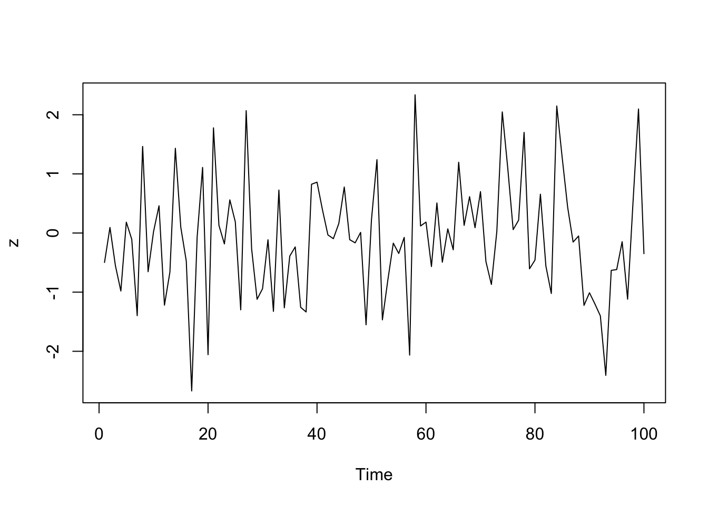

Chapter 7 Pipes
Fecha de la ultima revisión
## [1] "2023-10-30"El tema proviene de los siguientes sitios.
English: https://r4ds.had.co.nz/pipes.html
Español: https://es.r4ds.hadley.nz/
7.1 Temas: El paquete “magrittr” y sus funciones
Los pipes que vamos a evaluar son los siguientes:
%>% “Pipe”
%!>% “Eager Pipe”
%$% “Exposition pipe”
%<>% “Assigment pipe”
%T>% “Tee Pipe”
%in% “In Pipe”
Función basica para calcular el precio básico de de diamantes por quilates
## # A tibble: 3 × 10
## carat cut color clarity depth table price x y z
## <dbl> <ord> <ord> <ord> <dbl> <dbl> <int> <dbl> <dbl> <dbl>
## 1 0.23 Ideal E SI2 61.5 55 326 3.95 3.98 2.43
## 2 0.21 Premium E SI1 59.8 61 326 3.89 3.84 2.31
## 3 0.23 Good E VS1 56.9 65 327 4.05 4.07 2.31Code
## # A tibble: 3 × 11
## carat cut color clarity depth table price x y z Precio_q
## <dbl> <ord> <ord> <ord> <dbl> <dbl> <int> <dbl> <dbl> <dbl> <dbl>
## 1 0.23 Ideal E SI2 61.5 55 326 3.95 3.98 2.43 1417.
## 2 0.21 Premium E SI1 59.8 61 326 3.89 3.84 2.31 1552.
## 3 0.23 Good E VS1 56.9 65 327 4.05 4.07 2.31 1422.Calcular el promedio de precio por la calidad de los diamantes usando pipes
## # A tibble: 5 × 2
## cut Precio_color
## <ord> <dbl>
## 1 Fair 4359.
## 2 Good 3929.
## 3 Very Good 3982.
## 4 Premium 4584.
## 5 Ideal 3458.Calcular el promedio de precio por color de los diamantes usando pipes
7.2 %>% pipes
Un ejemplo básico del pipe
Code
## cyl mpg disp hp drat wt qsec vs am gear carb kpl
## 1 4 25.90 108.05 111.00 3.94 2.15 17.75 1.00 1.00 4.50 2.00 11.010090
## 2 6 19.74 183.31 122.29 3.59 3.12 17.98 0.57 0.43 3.86 3.43 8.391474
## 3 8 15.10 353.10 209.21 3.23 4.00 16.77 0.00 0.14 3.29 3.50 6.419010Un ejemplo sin usar el pipe para calcular la misma información
Code
## cyl mpg disp hp drat wt qsec vs am gear carb kpl
## 1 4 25.90 108.05 111.00 3.94 2.15 17.75 1.00 1.00 4.50 2.00 11.010090
## 2 6 19.74 183.31 122.29 3.59 3.12 17.98 0.57 0.43 3.86 3.43 8.391474
## 3 8 15.10 353.10 209.21 3.23 4.00 16.77 0.00 0.14 3.29 3.50 6.419010Code
## cyl mpg_1 disp_1 hp_1 drat_1 wt_1 qsec_1 vs_1 am_1
## 1 4 25.90000 108.0500 111.0000 3.940000 2.146500 17.75000 1.0000000 1.0000000
## 2 6 19.74286 183.3143 122.2857 3.585714 3.117143 17.97714 0.5714286 0.4285714
## 3 8 15.10000 353.1000 209.2143 3.229286 3.999214 16.77214 0.0000000 0.1428571
## gear_1 carb_1 kpl
## 1 4.500000 2.000000 11.010090
## 2 3.857143 3.428571 8.392689
## 3 3.285714 3.500000 6.419010

7.5 %<>%
Pipe an object forward into a function or call expression and update the lhs object with the resulting value.
lhs %<>% rhs
lhs : An object which serves both as the initial value and as target.
rhs : a function call using the magrittr semantics.
## Sepal.Length Sepal.Width Petal.Length Petal.Width Species
## 1 5.1 3.5 1.4 0.2 setosa
## 2 4.9 3.0 1.4 0.2 setosa
## 3 4.7 3.2 1.3 0.2 setosa
## 4 4.6 3.1 1.5 0.2 setosa
## 5 5.0 3.6 1.4 0.2 setosa
## 6 5.4 3.9 1.7 0.4 setosa## [1] 2.258318 2.213594 2.167948 2.144761 2.236068 2.323790## [1] 0.63831064 0.02058571 -0.09906960 -1.40140947 -1.22885389 0.51704077
## [7] -0.45872075 -0.79026468 0.34313850 0.39180836## [1] 0.01837830 0.02058571 0.02623028 0.02796914 0.05705836 0.06845718
## [7] 0.07382441 0.07525013 0.07658476 0.09906960 0.11028885 0.11813463
## [13] 0.12161264 0.13761578 0.14361692 0.15630041 0.17881177 0.24295029
## [19] 0.29706765 0.297600477.6 %in%
- Filter for values specific values within a variable
## [1] "Sepal.Length" "Sepal.Width" "Petal.Length" "Petal.Width" "Species"## Sepal.Length Sepal.Width Petal.Length Petal.Width Species
## 1 2.258318 3.5 1.4 0.2 setosa
## 2 2.213594 3.0 1.4 0.2 setosa
## 3 2.167948 3.2 1.3 0.2 setosa
## 4 2.144761 3.1 1.5 0.2 setosa
## 5 2.236068 3.6 1.4 0.2 setosa
## 6 2.323790 3.9 1.7 0.4 setosa7.7 %T>%
The tee pipe, %T>%, is useful when a series of operations have a function that does not return any value.
https://stackoverflow.com/questions/61196304/magrittr-tee-pipe-t-equivalent

## [1] -7.623831 6.846955